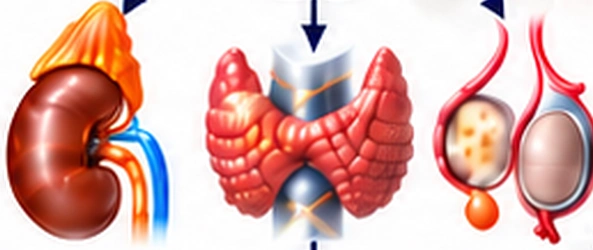
Neuroendocrine Pathway
HPA · HPT · HPG Axes
Cortisol · Thyroid Hormones · Sex Hormones
Olfactory Science lies at the scientific core of A&S.
Before a scent is consciously recognized, volatile molecules have already activated olfactory receptors and initiated signals across neural pathways associated with emotion, memory, stress and physiological regulation.
For A&S, scent is more than a sensory experience. It is a biological signal—connecting our surroundings with the brain and body, and influencing how we perceive, respond and adapt.
Through Olfactory Science, A&S explores how scent may support emotional balance, physiological resilience and Homeostasis.
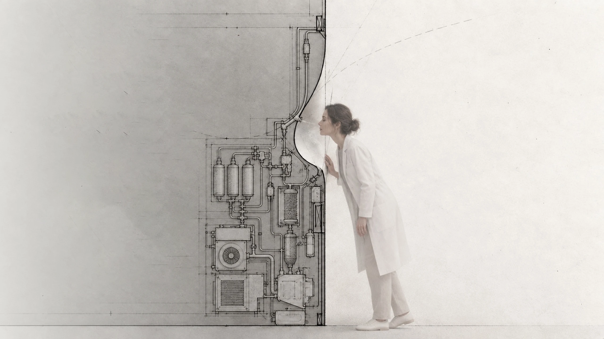
Olfactory Science
Odour molecules activate the olfactory system and are processed through cortical, limbic and hypothalamic networks. These signals engage neuroendocrine, autonomic and neuromodulatory pathways, collectively influencing immune, metabolic, endocrine and neurobehavioral responses.
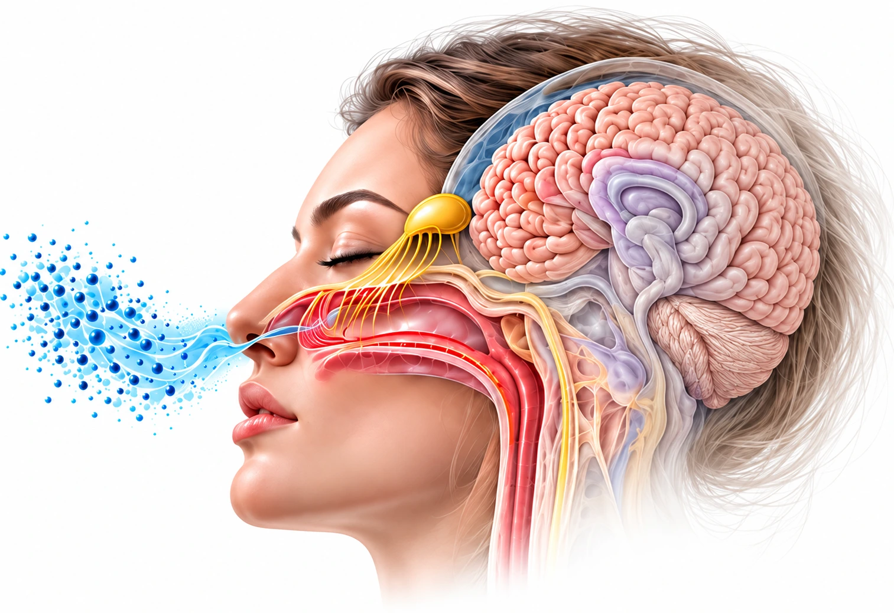
Mediodorsal Thalamus Orbitofrontal Cortex
Entorhinal Cortex Hippocampus
Amygdala
Amygdala Hippocampus
Amygdala Hypothalamus
Hypothalamus Brainstem–Midbrain Networks

HPA · HPT · HPG Axes
Cortisol · Thyroid Hormones · Sex Hormones
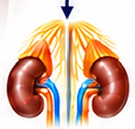
Adrenal–Medullary Response
Epinephrine · Norepinephrine
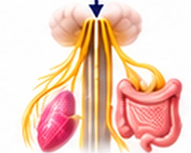
Vagal Regulation
Acetylcholine · Rest and Restoration
Autonomic Balance
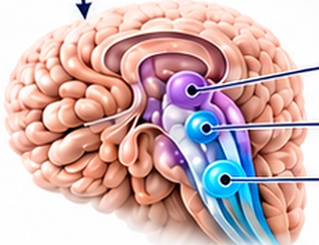
Locus Coeruleus · Raphe Nuclei · VTA
Norepinephrine · Serotonin · Dopamine
Integrated Systemic Influence
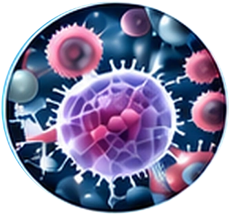
Inflammation · Defense
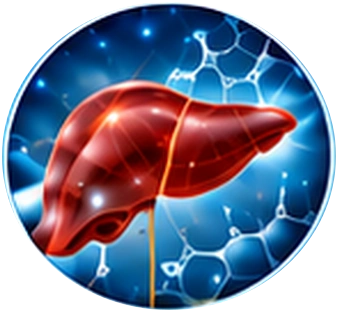
Energy · Glucose Regulation
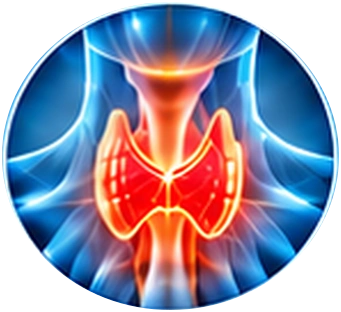
Hormonal Balance
Emotion · Memory · Attention
Olfactory signals can modulate neurotransmitter and neuroendocrine pathways. Through their interconnected effects, these pathways influence mood, stress, sleep, autonomic balance, metabolism, immunity and skin function—supporting homeostasis and resilience.
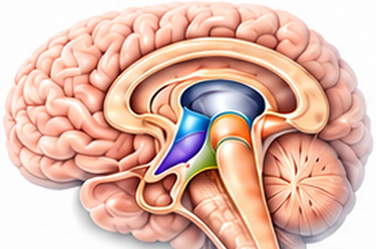
Integrative Hub
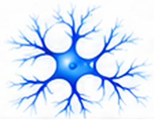
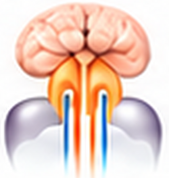
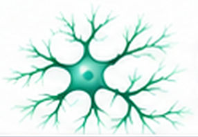
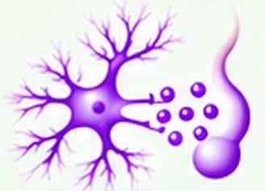
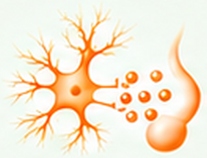
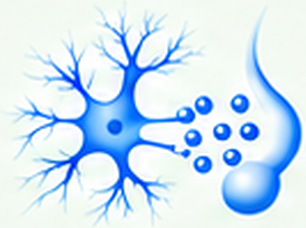
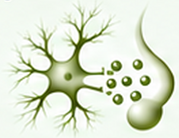
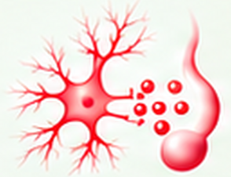
Mood · Reward · Motivation · Arousal · Attention · Cognition · Stress Resilience
CRH
ACTH
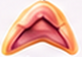
Adrenal Cortex
TRH
TSH
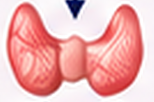
Thyroid Gland
GnRH
LH/FSH
Gonads
GHRH / Somatostatin
GH
Growth & Metabolic Targets
Dopamine
Prolactin
Reproductive & Metabolic Targets
Oxytocin
Multiple Peripheral Targets
Vasopressin (ADH)
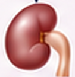
Kidney & Vascular Targets
Hormonal Balance · Stress Response · Growth · Reproduction · Fluid Balance · Metabolism
Sympathetic Activation · Parasympathetic Recovery
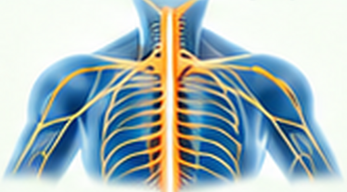
Organ Function · Inflammation · Vascular Tone · Sweating
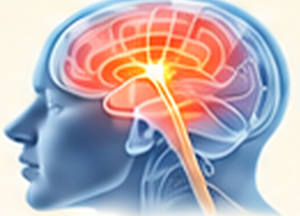
Emotion · Stress Regulation · Sleep · Immune Function
Performance & Recovery · Cognition · Motivation · Homeostasis · Behavior
Brain-Skin Axis
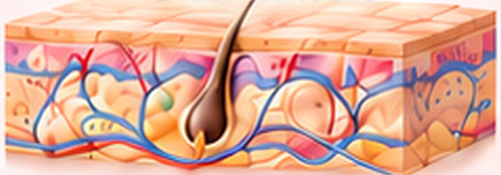
Barrier Function · Inflammation · Sebum Production
Hydration · Microbiome Balance · Wound Healing